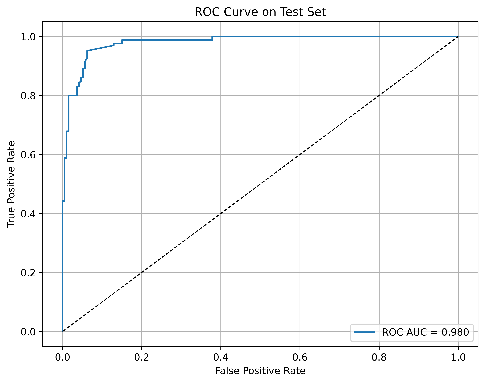
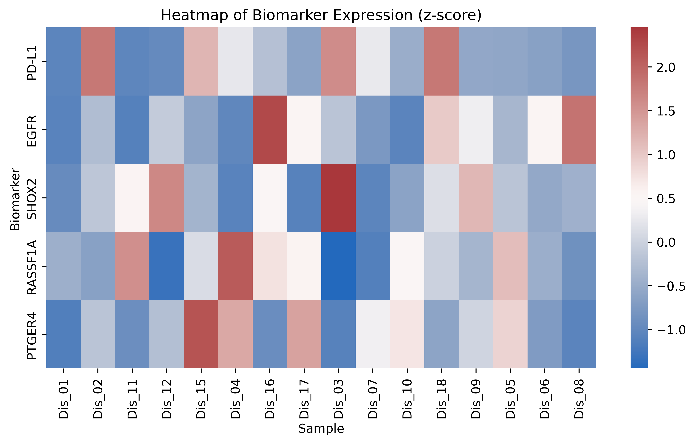
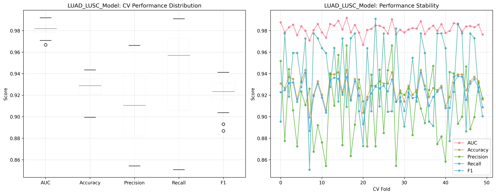
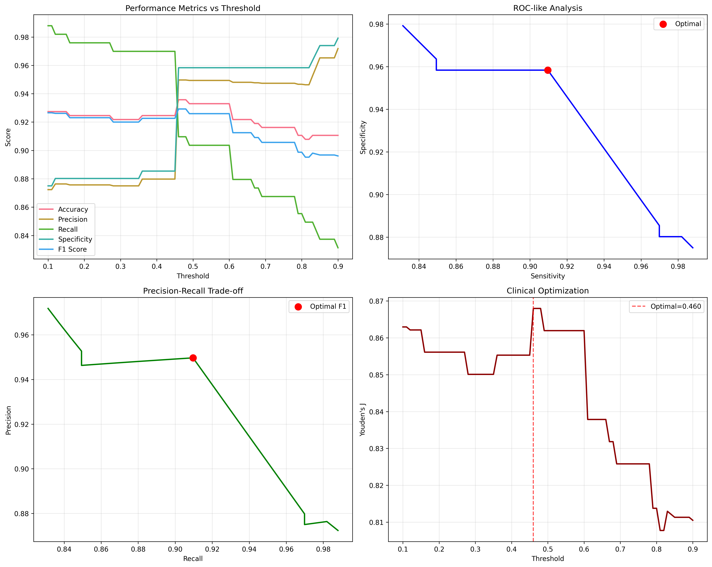
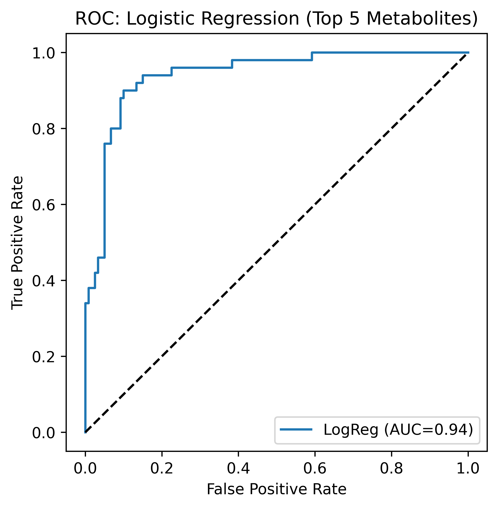

DNA methylation biomarkers
AI-driven lung cancer detection using epigenetic signatures.
This conference study evaluates whether methylation patterns across EGFR, PD-L1, SHOX2, RASSF1A, and PTGER4 can support non-invasive lung cancer detection across lung adenocarcinoma and lung squamous cell carcinoma cohorts.
The core lesson is that individual biomarkers were not enough on their own. The stronger signal emerged after feature engineering and a gradient boosting model combined weak molecular patterns into a more stable diagnostic classifier.
EGFR
PD-L1
SHOX2
RASSF1A
PTGER4
gradient boosting
epigenomic biomarkers
DNA methylation ML
lung cancer detection
translational diagnostics
biomarker panels
clinical screening
computational oncology
model interpretation
reproducible validation
patient-level prediction
epigenomic biomarkers
DNA methylation ML
lung cancer detection
translational diagnostics
biomarker panels
clinical screening
computational oncology
model interpretation
reproducible validation
patient-level prediction
What it does
Converts methylation biomarker measurements into a validated classifier.
Assemble lung cancer methylation cohorts
Analyzes LUAD and LUSC methylation data across thousands of tumor and normal samples.
Engineer a compact biomarker feature set
Reduces 63 initial variables to 9 engineered features after quality control and preprocessing.
Train a gradient boosting classifier
Uses hyperparameter tuning and stratified validation to combine weak individual methylation signals.
Evaluate clinical-facing behavior
Reports ROC-AUC, accuracy, precision, recall, cross-validation stability, and threshold behavior.
Why it matters
The model is strongest because it learned from biomarker limitations.
RASSF1A showed the strongest individual signal among the five markers, but the single-marker results were not enough for a strong diagnostic tool. The project became more compelling when it showed why ensemble learning was necessary: the model combined subtle, imperfect methylation patterns into a stronger classifier.
Dataset scale
Screened 7,240 methylation samples, with 2,385 final processed samples after feature engineering.
Independent test performance
Reported 0.983 ROC-AUC, 92.7% accuracy, 87.6% precision, and 98.2% recall on the test set.
Cross-validation stability
Reported cross-validation ROC-AUC of 0.982 +/- 0.005, suggesting the model was not dependent on one split.
Biological interpretation
Stage-dependent methylation patterns, especially for RASSF1A and SHOX2, support biological plausibility.
Figures
Selected evidence from the methylation biomarker study.





Tools and data resources
The technical stack behind the methylation study.
The project used public cancer molecular data and scientific Python tooling to preprocess methylation features, train the classifier, and generate validation figures.
Public lung cancer molecular datasets for LUAD and LUSC analysis.
 Python
Python
Preprocessing, model training, evaluation, and reproducible analysis.
 pandas
pandas
Methylation tables, labels, feature matrices, and cohort organization.
 NumPy
NumPy
Numerical transformations and matrix operations for biomarker features.
 scikit-learn
scikit-learn
Gradient boosting, validation metrics, and threshold evaluation.
 Matplotlib / Seaborn
Matplotlib / Seaborn
ROC curves, biomarker heatmaps, validation plots, and threshold figures.
Manuscript status
Conference manuscript details available by request.
The public page summarizes the method, results, and selected figures without exposing private submission files. The manuscript can be shared directly by email when appropriate.